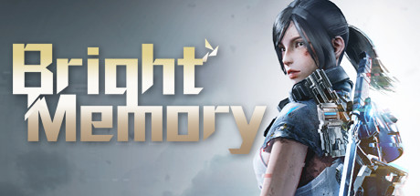

Hello! I like to code and sometime I write stuff too.
Most Recent ExCollege Class Post (10/18)

Bright Memory
In this week’s installment of “One Person Development Teams” we are going to look at Bright Memory: Episode 1, which was developed by Zeng Xiancheng and a Steam early-access in September of 2019. Xiancheng developed the game under the development name: studio FYQD. In previous weeks we have looked at games in the pixilated, 8 to 32bit style graphics, but Bright Memory is a much different story. Zeng used Unreal Engine 4 and Quixel Megascans library to develop the game and created some amazing graphics. If you did not know otherwise, you’d think the game was developed by a similarly sized team that developed Halo, or Grand Theft Auto, but somehow Zeng managed to create a game with Halo level graphics solely on his own. The cutscenes are cinematic, the player movements are smooth, and battle mechanics are intuitive.
This first-person shooter is centered around Sheila, an agent at the Supernatural Science Research Organization who is investigating mysteriously powerful relic swords that have the ability to bring the dead back to life. The main antagonist of the game is the terrorist organization called SAI, which has infiltrated the SRO and taken important data. While attempting to stop SAI, Sheila accidentally triggers the “Quantum Transporter” which sends her and everyone in the vicinity to a 1000-year-old uninhabited island – the mysteriously powerful swords manage to turn the beasts of the island back to life, and it’s Sheila’s job to find the solution to this myriad of problems.
Shelia is a fun character to play with. She carries multiple weapons, including various different types of guns, a sword for melee fighting, and has a supernatural ability called psychokinesis where she can control objects around her.
Bright Memory: Episode 1’s original release was a short game with no endless mode, but given the fantastic reception of the game, instead of pursing the original plan of making Episode 2, Zeng is making the story into a full-length title called Bright Memory: Infinite. The game is now being supported both by revenue that Episode 1 has generated as well as Unreal Engine Dev Grants. Zeng has now quit his full-time job to pursue his passion project. He originally developed the game part-time and after work, but given both the positive reception and the critiques, he is dedicating his full attention to the game. Zeng has been quoted talking about the improvements and new style for the gameplay: "Bright Memory: Infinite features newly overhauled environments and scenarios, as well as newly implemented improvements and optimizations in regard to level design, sound effects, music, character imagery, and more…It features more and more hardcore enemies as you progress through the later stages. Players can use a sword to destroy enemy armor and then use guns to do real damage and take them down – different skills must be used against different enemies for the best results."
Zeng Xiancheng is hard at work turning his passion project into a revolutionary game that looks and feels like a triple-A game. I’m extremely excited to see the full release of Bright Memory: Infinite and if you’re interested in playing Bright Memory: Episode 1, check out the steam page here (all players who buy Episode 1 will get Infinite for free):
Steam Page